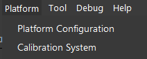
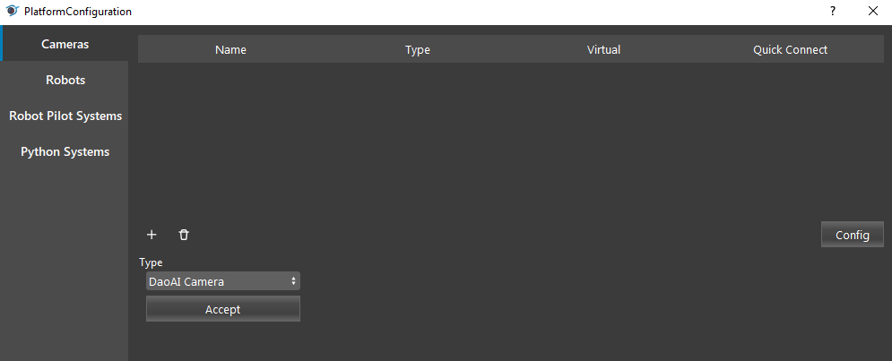
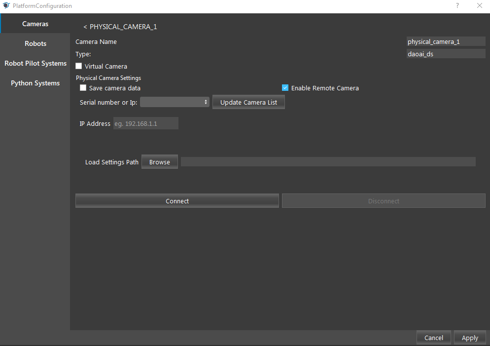

使用多个 DaoAI 相机
DaoAI Vision 可以让您同时操作多个 DaoAI BP 系列相机（例如，同时连接 BP-S 和 BP-L）。
这种方法有一些限制：
每个 DaoAI 相机必须拥有独特的 IP 地址。
每个 DaoAI 相机必须使用单独的以太网端口连接。
要在Vision中连接多台摄像机。
在工具条上选择 平台 → 平台配置 。
在 Vision 中连接多个相机：
在工具栏中选择 平台 （Platform） → 平台配置 （Platform Configuration）。
在 相机 （Camera） 选项卡中，单击 + 添加新相机，从下拉列表中选择适当的相机型号，然后单击 接受 （Accept） 添加相机。
如果是远程相机，则选中 启用远程相机 （Enable Remote Camera） 复选框并输入其 IP 地址。 单击 更新相机列表 （Update Camera List），然后从列表中选择相机。单击 连接 （Connect） 连接相机。
备注
使用多个远程相机时，请确保您已经配置了相机的 IP 地址（请参见 Network Configuration），否则您可能会在查找或连接相机时遇到问题。